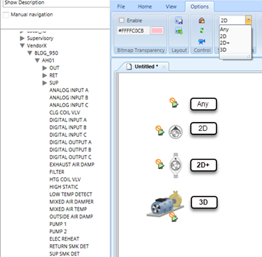

Symbol Styles
When you drop a data point onto a graphic, the designated Default Symbol related to the data point object is placed on the graphic.
That Symbol may also have a Style attributed to it. During an editing session, from the Options tab’s Symbol Options group, you can select the Style to apply to subsequent objects that you drag on the canvas. With the Style selected, the appropriate Symbol and Style associated with the data point is displayed. Using this option also restricts the Symbol Instance > Replace menu to only allow the Style selected in the drop-down.

Assigning a Default Symbol and Creating a Style
Default Symbols and Styles for an object model and function are assigned in the Models and Functions tab, by right-clicking on a Symbol in the Symbols browser section. From this context menu you can select Set as Default and you can set the Style or create a New Style for the Symbol.
NOTE: Style names cannot use the name Any, and the following characters are restricted: \ / : ? * ^ " < > | .
The on a Symbol indicates that it is the default Symbol.
For more information on assigning Symbols and Styles, refer to Assigning Symbols Using the Library Browser.
Working with Styles
Styles include 2D, 2D+, 3D, or you can create a custom Style. A new Symbol Style can be created to meet Zone, Regional Company (RC), or project requirements. One Symbol in each Symbol group of a particular style is set as the Default Symbol.
Assigning a style to your Symbols allows you to categorize them according to a particular graphics need. For example, to create a three-dimensional representation of something, you want to apply the 3D Style to the Symbols for that graphic, so that all the objects you drag onto the canvas during your editing session represent the associated three-dimensional version of that object’s Symbol.
During your editing session, from the Options tab’s Symbol Options group, you can select the Style and which type of Symbol (Regular or Command) to apply to subsequent objects that you drag-and-drop on the canvas. With the Style selected, the appropriate Symbol and Style is displayed on the canvas. Using this option also restricts the Symbol Instance > Replace menu to only allow the Style selected in the drop-down.
The following rules also apply to Styles and Symbols:
- The Style assigned to the Symbol is only valid for the particular function of the object.
- If there is no Symbol found that is related to the selected style, then the default Symbol from another style group is displayed.
- If Any is selected from Symbol Style filter, then the default Symbol which does not have a Style is displayed.
If all Symbols belong to a Style, then the default Symbol of another group is displayed.
Clearing a Style
Styles are automatically removed as an option from the context menu if none of the functions use that particular Style.
You can also clear a Style from a Symbol by right-clicking on the Symbol in the Models and Functions > Symbols pane, and select Clear Style. The Symbol is removed from that Style.
If the Symbol was the default Symbol for that Style, another Symbol with the same Style becomes the default Symbol for the style and Default displays on that symbol.